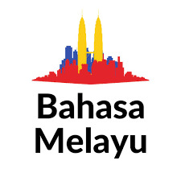

Selamat datang
Selamat datang
Sapaan untuk menyambut tamu.
Bahasa Melayu merupakan bahasa kebangsaan Malaysia. Pilih situasi, tampilkan frasa, lalu dengarkan pelafalan jika browser mendukung fitur suara.

Fitur suara menggunakan Web Speech API dengan pengecekan kondisi agar tetap aman pada browser yang tidak mendukungnya.
Selamat datang
Sapaan untuk menyambut tamu.
Penutur Indonesia dapat mengenali banyak kosakata Melayu, tetapi terdapat perbedaan penggunaan, ejaan, nuansa, dan konteks.
“Apa kabar?”, “stasiun”, “saya ingin”, dan “enak sekali”.
“Apa khabar?”, “stesen”, “saya mahu”, dan “sedap sekali”.

Pantun, cerita rakyat, lagu, dan dialog dalam seni pertunjukan menunjukkan bagaimana bahasa menjadi sarana estetika, nasihat, humor, dan ingatan kolektif.